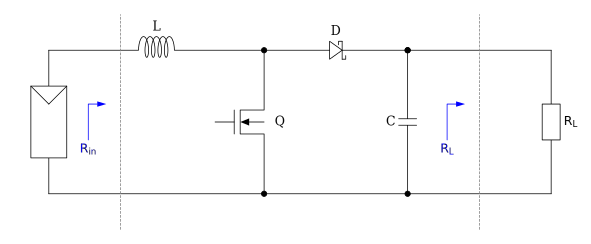
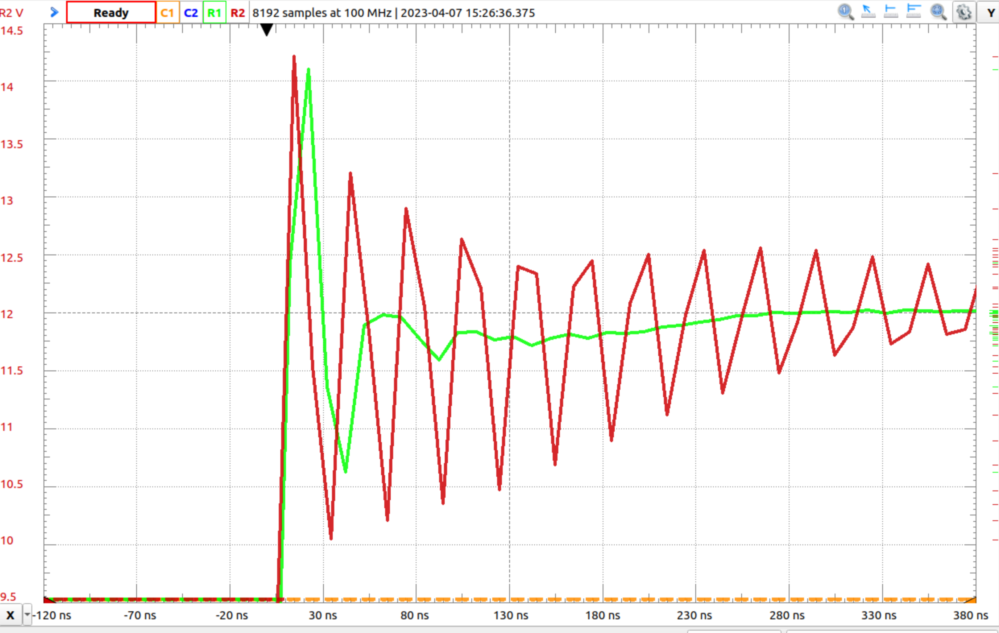
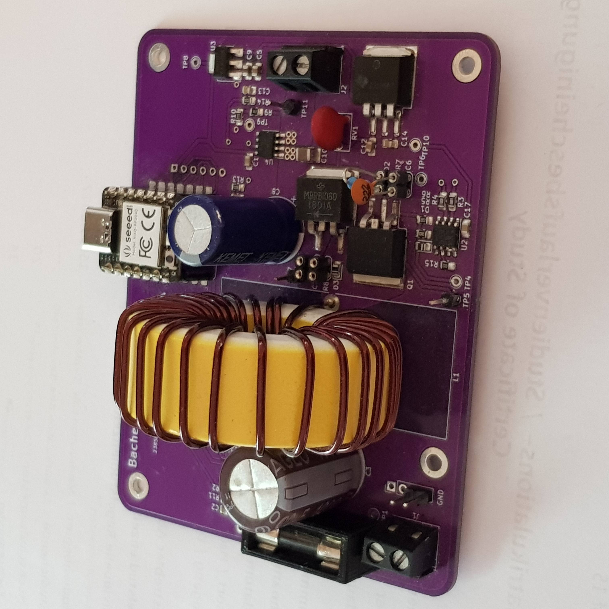

Bachelorarbeit

Solarmoduloptimierer
Arne Schmidt
Idee & Motivation
Balkonkraftwerk
Mikrowechselrichter
MPP-Tracker
frei programmierbar?
Idee & Motivation
closed source
Eigenentwicklung
Mikrocontroller
Mircopython
Leistungselektronik
Solarmoduloptimierer
Konzept
Leistungsanpassung
Konzept
Leistungsanpassung
Konzept
Leistungsanpassung
Konzept
Leistungsanpassung
Konzept
Konzept
Konzept
Konzept
Konzept
Konzept
IU-Kennlinie
Hochsetzsteller
Hochsetzsteller
Schaltbild
Hochsetzsteller
Einschaltzeit $dT_{s}$
Hochsetzsteller
Ausschaltzeit $(1-d)T_{s}$

Hochsetzsteller
Hochsetzsteller
Eingangswiderstand
Hochsetzsteller
maximales Tastverhältnis $$ d_{max} = 1 - \frac{U_{in}}{U_{out}} = 1 - \frac{15V}{50V} = 0,7 $$
minimales Tastverhältnis $$ d_{min} = 1 - \left(\frac{U_{in}}{U_{out}}\right) \cdot (1-d_{max}) \\ 1 - \left(\frac{30V}{15V}\right) \cdot (1-0,7) = 0,4 $$
Hochsetzsteller
Spule $$ L = \frac{U_{max}d_{min}}{\Delta i_{L} f_{s}} = \frac{30V \cdot 0,4}{2,5A \cdot 50 kHz} = 96 \mu H $$
Ausgangskondensator $$ C_{out} = \frac{I_{out}D_{max}}{\Delta U_{out} f_{s}} = \frac{2A \cdot 0,7}{0,1V \cdot 50 kHz} = 280 \mu F $$
Implementierung
erster Schaltplan
Implementierung
finaler Schaltplan
Mikrocontroller
Mikrocontroller
- Raspberry Pi Pico RP2040
- 26 GPIO Pins
- 4 Analog-Digital-Wandler
- 16 Pulsweitenmodulation
- großer Flashspeicher
- gute Dokumentation
- Micropython
Mikrocontroller
Spannungsmessung
Spannungsmessung
Spannungsteiler
Spannungsmessung
\[\begin{aligned} U_{out} = U_{in}\frac{R_{2}}{R_{1}+R_{2}} \\\\ 0V < U_{in/out} < 50V \\ 0V < U_{adc} < 3.3V \\\\ R_{1} = 36k \\ R_{2} = 2,2k \end{aligned} \]
Spannungsmessung
Spannungsmessung
Umrechnungsfunktion ADC:
\[\begin{aligned} U_{digital} = U_{analog} \cdot \frac{U_{sys}}{Auflösung ADC} \end{aligned} \]
from machine import Pin, ADC
adcScaleFac = 3.2 / 2**16
voltDiv = 36 / 2.2
adc1 = ADC(Pin(26))
while(True):
voltage = adc1.read_u16() * adcScaleFac * voltDiv
print(voltage)
Strommessung
Strommessung
Hall Effekt Sensor
Strommessung
Strommessung
Strommessung
Transferfunktion:
\[\begin{aligned} U_{out} = I_{in} \cdot S + U_{out,0A} \end{aligned} \]
from machine import ADC, Pin
adc = ADC(Pin(27))
sensivity = 0.2
zero_current_output = 3.2 * 0.5
adcScaleFac = 3.2 / 2**16
while(True):
voltage = adc.read_u16() * adcScaleFac
current = (voltage - zero_current_output) / sensivity
print(current)
Filter
Tiefpassfilter
Tiefpassfilter
Problem: rauschendes Signal
$$ C_{filter} = \frac{1}{2\pi R_{filter} f_{c}} $$ $$ R_{filter} = 10k $$ $$ f_{c} = 75 Hz $$ $$ \rightarrow C_{filter} = 220 nF $$Tiefpassfilter
Software Filter
Pythoncode:
class FilterAvg():
def __init__(self, adc: ADC, samples: int):
self.buf = 0.
self.samples = samples
self.adc = adc
def calc(self):
for sample in range(self.samples):
self.buf += self.adc.read_u16()
filtered = self.buf/self.samples
self.buf = 0.
return(filtered)
Mosfet und Treiber
Mosfet und Treiber
Mosfet und Treiber
Pulsweitenmodulation
Pythoncode:
from machine import Pin, PWM
pwm = PWM(Pin(6))
pwm.freq(50000)
pwm.duty_u16(35000)
enable = Pin(7, Pin.OUT)
enable.on()
def setDutyCycle(self, duty):
'''Set mosfet dutycycle for boost converter'''
self.duty = int(((100 - duty) / 100) * 65536)
self.pwm.duty_u16(self.duty)
Snubbercircuit
Snubbercircuit

Snubbercircuit
Snubbercircuit
Implementierung

Algorithmen
Algorithmen
Observe & Perturb
Algorithmen
Observe & Perturb
while(True):
device.getfilteredADC()
device.calcADCData()
power_delta = device.power[0] - power_pre
voltage_delta = device.voltage[0] - voltage_pre
power_pre = device.power[0]
voltage_pre = device.voltage[0]
if power_delta >= 0:
if voltage_delta > 0:
device.vRef -= 1
else:
device.vRef += 1
elif power_delta < 0:
if voltage_delta > 0:
device.vRef += 1
else:
device.vRef -= 1
device.vRef = clamp(device.vRef)
device.setDutyCycle(device.vRef)
Algorithmen
Observe & Perturb
Algorithmen
IU-Scanner
Algorithmen
IU-Scanner
power_curve =[]
while(True):
for duty in range(70):
device.setDutyCycle(duty)
time.sleep_ms(50)
device.getfilteredADC()
device.calcADCData()
time.sleep_ms(50)
power_curve.append(device.power[0])
device.printOut()
if device.voltage[0] < 12:
print('Abbruch ', device.voltage[0])
break
power_max = max(power_curve)
duty_max = power_curve.index(power_max)
power_curve.clear()
time.sleep_ms(500)
devive.setDutyCycle(duty_max)
print('power_max:{}W duty_max:{}'.format(power_max, duty_max))
time.sleep(10)
Algorithmen
IU-Scanner
PV-Emulator
PV-Emulator
PV-Emulator

PV-Emulator
verschattet
PV-Emulator
verschattet

PV-Emulator
Praktischer Versuch
Perturb & Observe
nicht verschattet

Perturb & Observe
verschattet
IU-Scanner
nicht verschattet

IU-Scanner
verschattet
Danke für Ihre Aufmerksamkeit!
